全文翻译
Abstract
我们利用扩散概率模型（一类受非平衡热力学启发的隐变量模型）生成了高质量的图像合成结果。通过训练基于加权变分界限的目标函数（该目标函数源自扩散模型与带朗之万动态的去噪分数匹配之间的新联系），我们的最佳结果得以实现。模型自然支持渐进式有损解压缩方案，可视为自回归解码的广义形式。在无条件CIFAR10数据集上，我们获得了9.46的Inception分数和3.17的FID分数（当前最优）。在256×256 LSUN数据集上，样本质量与ProgressiveGAN相当。代码已开源：https://github.com/hojonathanho/diffusion。
Introduction
近年来，各类深度生成模型在多种数据模态中都展现出了高质量的样本生成能力。生成对抗网络（GANs）、自回归模型、流模型和变分自编码器（VAEs）已经合成了令人惊叹的图像和音频样本[14, 27, 3, 58, 38, 25, 10, 32, 44, 57, 26, 33, 45]。在基于能量的建模和得分匹配方面也取得了显著进展，生成的图像可与GANs生成的图像相媲美[11, 55]。
本文展示了扩散概率模型的进展[53]。扩散概率模型（为简洁起见，我们将其称为“扩散模型”）是一种参数化的马尔可夫链，通过变分推理进行训练，以在有限时间后生成与数据匹配的样本。该链的转移是通过学习来逆转扩散过程的，扩散过程是一个马尔可夫链，它以与采样相反的方向逐渐向数据中添加噪声，直到信号被破坏。当扩散由少量高斯噪声组成时，将采样链的转移也设置为条件高斯分布就足够了，这使得神经网络的参数化特别简单。
扩散模型定义简单且训练高效，但据我们所知，此前尚无研究证明它们能够生成高质量的样本。我们的研究表明，扩散模型实际上能够生成高质量的样本，有时甚至优于其他类型生成模型的已发表结果（第4节）。此外，我们还揭示了扩散模型的一种特定参数化方式，在训练过程中，它与多噪声水平下的去噪得分匹配等价，在采样过程中，它与退火朗之万动力学等价（第3.2节）[55, 61]。我们使用这种参数化方式获得了最佳的样本质量结果（第4.2节），因此我们认为这种等价性是我们的主要贡献之一。
尽管我们的模型生成的样本质量较高，但与其他基于似然的模型相比，其对数似然并不具有竞争力（不过，我们模型的对数似然比已报道的基于能量的模型和得分匹配的退火重要性采样的大估计值要好[11, 55]）。我们发现，我们模型的大部分无损编码长度都用于描述难以察觉的图像细节（第4.3节）。我们用有损压缩的语言对这一现象进行了更深入的分析，并表明扩散模型的采样过程是一种渐进式解码，类似于沿着一种位序的自回归解码，这种位序极大地扩展了自回归模型通常所能实现的范围。
Background
扩散模型[53]是一种潜在变量模型，形式为$p_{\theta}(x_{0}):=\int p_{\theta}(x_{0: T}) d x_{1: T}$，其中$x_{1}, …, x_{T}$是与数据$x_{0} \sim q(x_{0})$维度相同的潜在变量。联合分布$p_{\theta}(x_{0: T})$被称为反向过程，它被定义为一个马尔可夫链，其从$p(x_{T})=N(x_{T} ; 0, I)$开始，具有经过学习的高斯转移概率：
扩散模型与其他类型的潜在变量模型的区别在于，近似后验$q(x_{1: T} | x_{0})$（称为正向过程或扩散过程）被固定为一个马尔可夫链，该链根据方差调度$\beta_{1}, …, \beta_{T}$逐渐向数据中添加高斯噪声：
训练通过优化负对数似然的常用变分下界来进行：
正向过程的方差$\beta_{t}$可以通过重参数化[33]进行学习，也可以作为超参数固定。反向过程的表达能力部分通过在$p_{\theta}(x_{t-1} | x_{t})$中选择高斯条件分布来保证，因为当$\beta_{t}$较小时，两个过程具有相同的函数形式[53]。正向过程的一个显著特性是，它允许在任意时间步$t$以封闭形式对$x_{t}$进行采样：使用符号$\alpha_{t}:=1-\beta_{t}$和$\bar{\alpha}_{t}:=\prod_{s=1}^{t} \alpha_{s}$，我们有
因此，通过随机梯度下降优化$L$中的随机项，可以实现高效训练。通过将公式(3)中的$L$改写为以下形式，可以进一步降低方差：
（详细内容见附录A。这些项的标签在第3节中使用。）公式(5)使用KL散度直接将$p_{\theta}(x_{t-1} | x_{t})$与正向过程的后验进行比较，当以$x_{0}$为条件时，正向过程的后验是易于处理的：
因此，公式(5)中的所有KL散度都是高斯分布之间的比较，所以它们可以用Rao-Blackwellized方法通过封闭形式的表达式来计算，而无需使用高方差的蒙特卡罗估计。
Diffusion models and denoising autoencoders
扩散模型可能看似是一类受限的潜在变量模型，但它们在实现过程中允许有大量的自由度。人们必须选择正向过程的方差$\beta_t$，以及反向过程的模型架构和高斯分布参数化方式。为指导我们的选择，我们在扩散模型与去噪得分匹配（3.2节）之间建立了一种新的明确联系，这产生了一个简化的、加权的变分下界目标，用于扩散模型（3.4节）。最终，我们的模型设计通过简单性和实证结果（第4节）得以证明合理。我们的讨论在等式(5)的背景下进行组织。
Forward process and $L_{T}$
我们忽略了正向过程方差$\beta_t$可通过重参数化进行学习这一事实，而是将它们固定为常数（详见第4节）。因此，在我们的实现中，近似后验$q$没有可学习的参数，所以$L_T$在训练期间是一个常数，可以忽略不计。
Reverse process and $L_{1:T−1}$
现在我们讨论在$1 < t \leq T$时，对于$p_{\theta}(x_{t - 1}|x_t) = \mathcal{N}(x_{t - 1}; \mu_{\theta}(x_t, t), \Sigma_{\theta}(x_t, t))$的选择。首先，我们将$\Sigma_{\theta}(x_t, t) = \sigma_t^2 I$设为与训练无关的时间相关常数。在实验中，$\sigma_t^2 = \beta_t$和$\sigma_t^2 = \tilde{\beta}_t = \frac{1 - \overline{\alpha}_{t - 1}}{1 - \overline{\alpha}_t}\beta_t$都有相似的结果。第一种选择对于$x_0 \sim \mathcal{N}(0, I)$是最优的，第二种选择对于$x_0$被确定性地设为一个点时是最优的。这些是与具有坐标方向单位方差的数据的反向过程熵的上下界相对应的两种极端选择[53]。
其次，为了表示均值$\mu_{\theta}(x_t, t)$，我们基于对$L_t$的以下分析提出一种特定的参数化。在$p_{\theta}(x_{t - 1}|x_t) = \mathcal{N}(x_{t - 1}; \mu_{\theta}(x_t, t), \sigma_t^2 I)$的情况下，我们可以写出：
其中$C$是一个不依赖于$\theta$的常数。所以，我们看到对$\mu_{\theta}$最直接的参数化是一个预测$\tilde{\mu}_t$（正向过程后验均值）的模型。然而，我们可以通过将公式(4)重新参数化为$x_t(x_0, \epsilon) = \sqrt{\overline{\alpha}_t}x_0 + \sqrt{1 - \overline{\alpha}_t}\epsilon$（其中$\epsilon \sim \mathcal{N}(0, I)$），并应用正向过程后验公式(7)来进一步展开公式(8)：
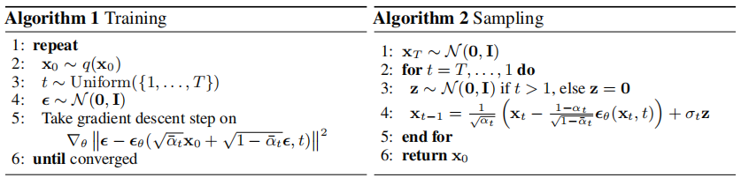
公式(10)表明，给定$x_t$，$\mu_{\theta}$必须预测$\frac{1}{\sqrt{\alpha_t}}\left(x_t - \frac{\beta_t}{\sqrt{1 - \overline{\alpha}_t}}\epsilon\right)$。由于$x_t$可作为模型的输入，我们可以选择如下参数化方式：
其中，$\epsilon_{\theta}$是一个函数近似器，旨在从$x_t$预测$\epsilon$。要从$p_{\theta}(x_{t - 1}|x_t)$中采样$x_{t - 1}$，需计算$x_{t - 1}=\frac{1}{\sqrt{\alpha_t}}\left(x_t - \frac{1 - \alpha_t}{\sqrt{1 - \overline{\alpha}_t}}\epsilon_{\theta}(x_t, t)\right)+\sigma_t z$，其中$z \sim \mathcal{N}(0, I)$。完整的采样过程（算法2）类似于朗之万动力学，其中$\epsilon_{\theta}$作为数据密度的学习梯度。此外，采用参数化(11)后，公式(10)简化为：
这类似于在由$t$索引的多个噪声尺度上进行去噪得分匹配[55]。由于公式(12)等于（类似于朗之万的反向过程(11)的变分下界的一项），我们发现优化一个类似于去噪得分匹配的目标，等同于使用变分推断来拟合类似于朗之万动力学的采样链的有限时间边际分布。
总而言之，我们可以训练反向过程均值函数近似器$\mu_{\theta}$来预测$\tilde{\mu}_t$，或者通过修改其参数化方式，训练它来预测$\epsilon$。（也有可能预测$x_0$，但在我们的实验早期发现这会导致样本质量较差。）我们已经表明，$\epsilon$ - 预测参数化既类似于朗之万动力学，又简化了扩散模型的变分下界目标，这类似于去噪得分匹配。尽管如此，它只是$p_{\theta}(x_{t - 1}|x_t)$的另一种参数化方式，所以我们在第4节的消融实验中验证了它相对于预测$\tilde{\mu}_t$的有效性。
Data scaling, reverse process decoder, and $L_{0}$
我们假设图像数据由集合$\{0, 1, \ldots, 255\}$中的整数组成，并将其线性缩放到$[-1, 1]$。这确保了神经网络反向过程从标准正态先验$p(x_T)$开始，对经过一致缩放的输入进行操作。为了得到离散对数似然，我们将反向过程的最后一项设置为一个独立的离散解码器，该解码器源自高斯分布$\mathcal{N}(x_0; \mu_{\theta}(x_1, 1), \sigma_1^2 I)$：
其中$D$是数据维度，上标$i$表示提取一个坐标。（直接采用更强大的解码器，比如条件自回归模型会很直接，但我们将其留作未来的工作。）与变分自编码器（VAE）解码器和自回归模型中使用的离散化连续分布类似[34, 52]，我们在此处的选择确保了变分下界是离散数据的无损编码长度，无需向数据添加噪声，也无需将缩放操作纳入对数似然。在采样时，我们无噪声地展示$\mu_{\theta}(x_1, 1)$。
Simplified training objective
有了上述定义的反向过程和解码器，由公式(12)和(13)推导得出的各项所构成的变分下界，显然关于$\theta$是可微的，可用于训练。然而，我们发现对以下变分下界的变体进行训练对样本质量有益（并且实现起来更简单）：
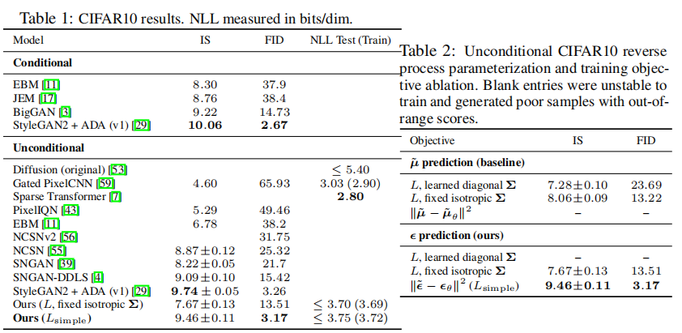
其中，$t$在$1$到$T$之间均匀取值。当$t = 1$时，对应于$L_0$，此时离散解码器定义(13)中的积分由高斯概率密度函数乘以区间宽度近似，忽略$\sigma^2$和边缘效应。当$t > 1$时，对应于公式(12)的无加权版本，类似于NCSN去噪得分匹配模型所使用的损失加权方式[55]。（$L_T$不出现，因为正向过程的方差$\beta_t$是固定的。）算法1展示了完整的训练过程。
由于我们的简化目标(14)舍弃了公式(12)中的加权，与标准变分下界相比[18, 22]，它是一个强调重建不同方面的加权变分下界。特别地，我们在第4节中的扩散过程设置导致简化目标对对应于较小$t$的损失项进行降权。这些项训练网络对噪声量极少的数据进行去噪，所以对它们降权是有益的，这样网络可以专注于在较大$t$项时更困难的去噪任务。我们将在实验中看到，这种重新加权会带来更好的样本质量。
Experiments
在所有实验中，我们将 $T$ 设置为1000，这样采样过程中所需的神经网络评估次数与之前的工作 [53, 55] 保持一致。我们将正向过程的方差设置为常数，从 $\beta_1 = 10^{-4}$ 线性增加到 $\beta_T = 0.02$ 。选择这些常数是因为相对于缩放到 $[-1, 1]$ 的数据来说它们较小，这确保了反向过程和正向过程具有大致相同的函数形式，同时使 $x_T$ 处的信噪比尽可能小（在我们的实验中，$L_T = D_{KL}(q(x_T|x_0)||N(0, I)) \approx 10^{-5}$ 比特/维度）。
为了表示反向过程，我们使用类似于未掩码的PixelCNN++ [52, 48] 的U - Net骨干网络，并在整个网络中使用组归一化 [66] 。网络参数在不同时间步共享，时间 $t$ 通过Transformer正弦位置嵌入 [60] 传递给网络。我们在16×16的特征图分辨率上使用自注意力机制 [63, 60] 。具体细节见附录B。
Sample quality
表1展示了CIFAR10数据集上的Inception分数、FID分数和负对数似然（无损编码长度）。我们的无条件模型的FID分数为3.17，这表明其样本质量优于文献中的大多数模型，包括类条件模型。我们按照标准做法，相对于训练集计算FID分数；当我们相对于测试集计算时，分数为5.24，这仍然优于文献中许多模型在训练集上的FID分数。
我们发现，正如预期的那样，在真实变分下界上训练我们的模型会得到比在简化目标上训练更好的编码长度，但后者能产生最佳的样本质量。CIFAR10和256×256的CelebA - HQ样本见图1，256×256的LSUN样本见图3和图4 [71] ，更多样本见附录D。
Reverse process parameterization and training objective ablatio
在表2中，我们展示了反向过程参数化和训练目标（第3.2节）对样本质量的影响。我们发现，预测 $\bar{\mu}$ 的基线选项只有在基于真实变分下界而非类似公式（14）的简化目标（未加权均方误差）进行训练时才表现良好。我们还发现，与固定方差相比，学习反向过程的方差（通过在变分下界中加入参数化的对角矩阵 $\sum_{\theta}(x_t)$ ）会导致训练不稳定且样本质量更差。我们提出的预测 $\epsilon$ 的方法，在基于固定方差的变分下界训练时，表现与预测 $\bar{\mu}$ 大致相同，但在使用我们的简化目标训练时，表现要比预测 $\bar{\mu}$ 好得多。
Progressive coding
表1还展示了我们CIFAR10模型的编码长度。训练集和测试集之间的差距最大为0.03比特/维度，这与其他基于似然的模型所报告的差距相当，表明我们的扩散模型没有过拟合（最近邻可视化见附录D）。尽管如此，虽然我们的无损编码长度比基于能量的模型和使用退火重要性采样的分数匹配所报告的大估计值要好 [11] ，但与其他类型的基于似然的生成模型相比仍不具竞争力 [7] 。
由于我们的样本质量仍然很高，因此我们得出结论，扩散模型具有一种归纳偏差，使其成为出色的有损压缩器。将变分下界项 $L_1+\cdots+L_T$ 视为速率，$L_0$ 视为失真，我们在CIFAR10上生成最高质量样本的模型的速率为1.78比特/维度，失真为1.97比特/维度，在0到255的尺度上，这相当于均方根误差为0.95。超过一半的无损编码长度用于描述难以察觉的失真。
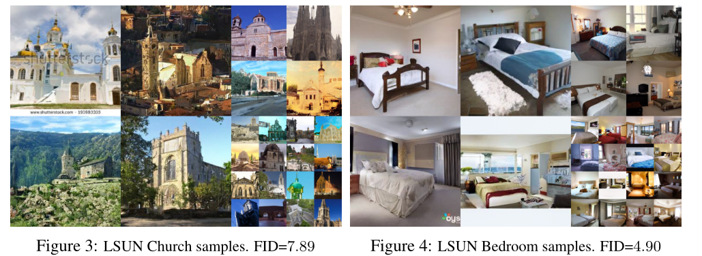
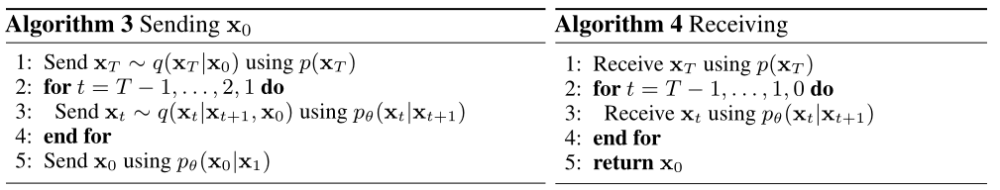
渐进有损压缩：我们可以通过引入一种渐进有损编码来进一步探究模型的速率 - 失真行为，该编码与公式（5）的形式相似：见算法3和算法4，这两个算法假设可以使用一种过程，如最小随机编码 [19, 20] ，该过程平均可以使用大约 $D_{KL}(q(x)||p(x))$ 比特来传输样本 $x \sim q(x)$ ，对于任何分布 $p$ 和 $q$ ，接收方事先仅知道 $p$ 。当应用于 $x_0 \sim q(x_0)$ 时，算法3和算法4按顺序传输 $x_T, \cdots, x_0$ ，总期望编码长度等于公式（5）。在任何时间 $t$ ，接收方都可以完全获取部分信息 $x_t$ ，并可以渐进地估计：
这是根据公式（4）得到的。（随机重建 $x_0 \sim p_{\theta}(x_0|x_t)$ 也是有效的，但我们在此不考虑它，因为这会使失真评估更加困难。）图5展示了在CIFAR10测试集上得到的速率 - 失真图。在每个时间 $t$ ，失真计算为均方根误差 $\sqrt{\frac{|x_0 - \hat{x}_0|^2}{D}}$ ，速率计算为到时间 $t$ 为止接收到的累积比特数。在速率 - 失真图的低速率区域，失真急剧下降，这表明大部分比特确实用于描述难以察觉的失真。
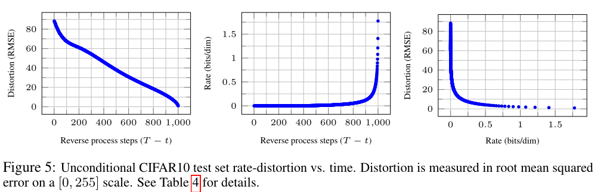渐进生成：我们还运行了一个从随机比特进行渐进解压缩的渐进无条件生成过程。换句话说，我们在使用算法2从反向过程采样时，预测反向过程的结果 $\hat{x}_0$ 。图6和图10展示了在反向过程中 $\hat{x}_0$ 的样本质量变化。大尺度图像特征首先出现，细节最后出现。图7展示了在不同 $t$ 下，固定 $x_t$ 时 $x_0 \sim p_{\theta}(x_0|x_t)$ 的随机预测结果。当 $t$ 较小时，除了精细细节外，大部分特征都被保留；当 $t$ 较大时，只有大尺度特征被保留。这可能暗示了概念压缩 [18] 。
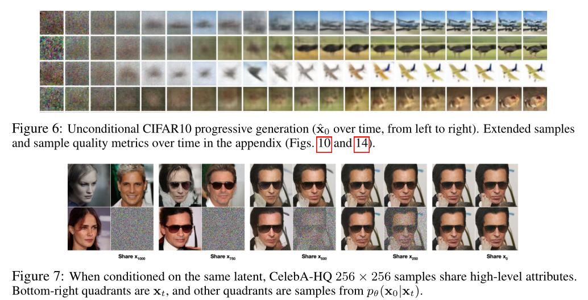与自回归解码的联系：注意，变分下界（5）可以重写为：
（推导见附录A）。现在考虑将扩散过程的长度 $T$ 设置为数据的维度，定义正向过程，使得 $q(x_t|x_0)$ 将所有概率质量集中在 $x_0$ 上，但前 $t$ 个坐标被屏蔽（即 $q(x_t|x_{t - 1})$ 屏蔽第 $t$ 个坐标），将 $p(x_T)$ 设置为将所有质量集中在一张空白图像上，并且为了便于讨论，将 $p_{\theta}(x_{t - 1}|x_t)$ 视为一个完全表达性的条件分布。在这些选择下，$D_{KL}(q(x_T)||p(x_T)) = 0$ ，最小化 $D_{KL}(q(x_{t - 1}|x_t)||p_{\theta}(x_{t - 1}|x_t))$ 会训练 $p_{\theta}$ 不变地复制坐标 $t + 1, \cdots, T$ ，并根据 $t + 1, \cdots, T$ 预测第 $t$ 个坐标。因此，使用这种特定的扩散训练 $p_{\theta}$ 就是在训练一个自回归模型。
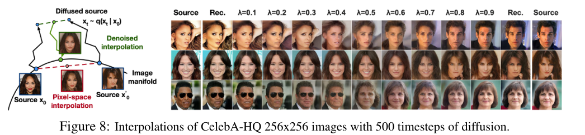
因此，我们可以将高斯扩散模型（2）解释为一种具有广义比特排序的自回归模型，这种排序无法通过重新排列数据坐标来表达。先前的工作表明，这种重新排序会引入影响样本质量的归纳偏差 [38] ，所以我们推测高斯扩散起到了类似的作用，可能效果更显著，因为与屏蔽噪声相比，向图像中添加高斯噪声可能更自然。此外，高斯扩散的长度不限于等于数据维度；例如，我们使用 $T = 1000$ ，这小于我们实验中32×32×3或256×256×3图像的维度。高斯扩散的长度可以缩短以实现快速采样，或者延长以提高模型的表达能力。
Interpolation
我们可以在潜在空间中对源图像 $x_0, x_0’ \sim q(x_0)$ 进行插值，使用 $q$ 作为随机编码器得到 $x_t, x_t’ \sim q(x_t|x_0)$ ，然后通过反向过程将线性插值后的潜在向量 $\overline{x}_t = (1 - \lambda)x_0 + \lambda x_0’$ 解码到图像空间，得到 $\overline{x}_0 \sim p(x_0|\overline{x}_t)$ 。实际上，我们使用反向过程去除源图像的损坏版本进行线性插值时产生的伪影，如图8（左）所示。我们为不同的 $\lambda$ 值固定噪声，使 $x_t$ 和 $x_t’$ 保持不变。图8（右）展示了原始256×256的CelebA - HQ图像的插值和重建结果（$t = 500$ ）。反向过程产生了高质量的重建结果，并且得到的插值结果合理，能够平滑地改变姿势、肤色、发型、表情和背景等属性，但眼镜部分的变化不太自然。$t$ 值越大，插值结果越粗糙、变化越多，在 $t = 1000$ 时会得到新颖的样本（附录图9）。
Related Work
虽然扩散模型可能与流模型（flows）[9, 46, 10, 32, 5, 16, 23]和变分自编码器（VAEs）[33, 47, 37]相似，但扩散模型的设计特点在于，其近似后验分布q没有参数，并且顶层潜在变量$X_T$与数据$x_0$的互信息几乎为零。我们提出的预测$\epsilon$的反向过程参数化方法，在多噪声水平下建立了扩散模型与去噪得分匹配之间的联系，同时在采样过程中与退火朗之万动力学相关[55, 56]。然而，扩散模型能够直接进行对数似然评估，并且训练过程通过变分推理显式地训练朗之万动力学采样器（详见附录C）。这种联系还意味着，某种加权形式的去噪得分匹配等同于通过变分推理训练一个类似朗之万的采样器。其他学习马尔可夫链转移算子的方法包括注入训练（infusion training）[2]、变分回溯（variational walkback）[15]、生成随机网络（generative stochastic networks）[1]，以及其他方法[50, 54, 36, 42, 35, 65]。
鉴于得分匹配与基于能量的模型之间的已知联系，我们的工作可能会对其他近期关于基于能量模型的研究[67-69, 12, 70, 13, 11, 41, 17, 8]产生影响。我们的率失真曲线是在一次变分下界评估过程中随时间计算得到的，这让人联想到在一次退火重要性采样中，如何通过改变失真惩罚来计算率失真曲线[24]。我们的渐进解码观点在卷积DRAW及相关模型[18, 40]中也有所体现，并且可能为自回归模型的子尺度排序或采样策略带来更通用的设计思路[38, 64]。
Conclusion
我们利用扩散模型生成了高质量的图像样本，并发现了扩散模型与训练马尔可夫链的变分推断、去噪分数匹配、退火朗之万动力学（进而与基于能量的模型）、自回归模型以及渐进有损压缩之间的联系。由于扩散模型在处理图像数据时似乎具有出色的归纳偏差，我们期待探索其在其他数据模态中的效用，以及作为其他类型生成模型和机器学习系统组件的潜力。
Broader Impact
我们在扩散模型方面的研究，与其他类型深度生成模型的现有工作有着相似的研究范畴，例如致力于提高生成对抗网络（GANs）、流模型（flows）、自回归模型等的样本质量。本文代表了将扩散模型发展成为这类技术中通用工具的一项进展，因此它可能会放大生成模型对更广泛世界已经产生（以及将会产生）的任何影响。
不幸的是，生成模型存在许多广为人知的恶意用途。样本生成技术可被用于出于政治目的制作知名人士的假图像和假视频。虽然在软件工具出现之前，假图像就已通过手工绘制的方式存在，但像我们这样的生成模型使这一过程变得更加容易。幸运的是，目前由卷积神经网络（CNN）生成的图像存在一些细微瑕疵，仍可被检测出来[62]，但生成模型的改进可能会加大检测难度。此外，生成模型还会反映出其训练数据集里的偏差。由于许多大型数据集是由自动化系统从互联网上收集而来，去除这些偏差往往很困难，尤其是当图像未被标注时。如果在这些数据集上训练的生成模型所产生的样本在互联网上大量传播，那么这些偏差只会进一步加剧。
另一方面，扩散模型在数据压缩方面可能会发挥作用。随着数据分辨率的提高和全球互联网流量的增加，数据压缩对于确保广大用户能够访问互联网至关重要。我们的研究可能有助于在未标记的原始数据上进行表征学习，从而服务于从图像分类到强化学习等一系列下游任务。扩散模型也有可能在艺术、摄影和音乐创作领域找到用武之地。
Acknowledgments and Disclosure of Funding
这项工作得到了ONR PECASE和NSF研究生研究奖学金的支持，根据赠款编号DGE-1752814。 Google的Tensorflow研究云（TFRC）提供了云TPU
Extra information
LSUN数据集的FID分数：LSUN数据集的FID分数列于表3。标记为∗的分数是StyleGAN2作为基线报告的，其他分数由各自的作者报告。
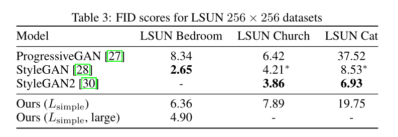
渐进压缩：我们在4.3节中关于有损压缩的论证只是一个概念验证，因为算法3和算法4依赖于诸如最小随机编码[20]之类的过程，而这种过程对于高维数据来说并不容易处理。这些算法只是对Sohl-Dickstein等人[53]的变分下界（5）进行了压缩方面的解释，尚未成为实用的压缩系统。
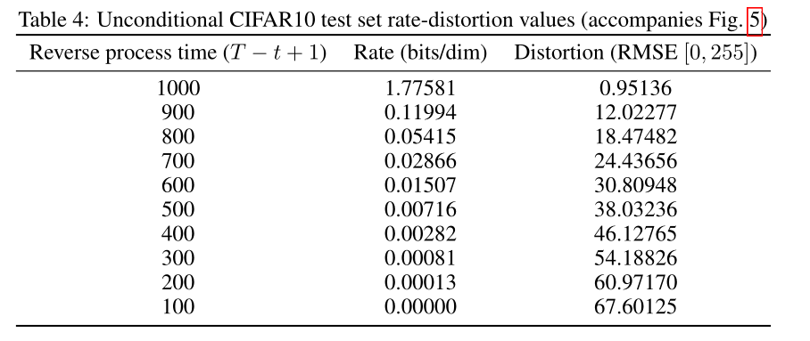
A Extended derivations
以下是扩散模型降低方差的变分下界公式（5）的推导过程。该内容源自Sohl-Dickstein等人的研究[53]，此处列出仅为保证内容完整性。
下面是$L$的另一种形式。该形式不易进行估计，但对我们在4.3节中的讨论很有帮助。
B Experimental details
我们的神经网络架构采用了PixelCNN++ [52]的骨干网络，它是一个基于Wide ResNet [72]的U - Net [48]。为简化实现过程，我们将权重归一化 [49]替换为了组归一化 [66]。我们的32×32模型使用了四个特征图分辨率（从32×32到4×4），而256×256模型则使用了六个。所有模型在每个分辨率级别都有两个卷积残差块，并且在卷积块之间的16×16分辨率处设有自注意力块 [6]。扩散时间t通过在每个残差块中添加Transformer正弦位置嵌入 [60] 来指定。我们的CIFAR10模型有3570万个参数，而LSUN和CelebA - HQ模型有1.14亿个参数。我们还通过增加滤波器数量，训练了一个更大版本的LSUN卧室模型，其参数约为2.56亿个。
我们在所有实验中都使用了TPU v3 - 8（类似于8个V100 GPU）。我们的CIFAR模型在批量大小为128时，每秒可训练21步（在800k步训练完成需要10.6小时），对一批256张图像进行采样需要17秒。我们的CelebA - HQ/LSUN（$256^2$）模型在批量大小为64时，每秒可训练2.2步，对一批128张图像进行采样需要300秒。我们在CelebA - HQ上训练了50万步，在LSUN卧室数据集上训练了240万步，在LSUN猫数据集上训练了180万步，在LSUN教堂数据集上训练了120万步。更大的LSUN卧室模型训练了115万步。
除了在早期为使网络大小符合内存限制而选择了一组超参数外，我们大部分超参数搜索工作都是为了优化CIFAR10的样本质量，然后将得到的设置应用到其他数据集上：
- 我们从一组常数、线性和二次调度中选择$\beta_t$的调度，所有调度都被限制为使$L_T\approx0$。我们未进行扫描就将$T$设置为1000，并选择了从$\beta_1 = 10^{-4}$到$\beta_T = 0.02$的线性调度。
- 我们通过在{0.1, 0.2, 0.3, 0.4}这些值中进行扫描，将CIFAR10上的随机失活率设置为0.1。在CIFAR10上不使用随机失活时，我们得到的样本质量较差，出现了类似于未正则化的PixelCNN++ [52] 中的过拟合伪影。我们在其他数据集上未进行扫描就将随机失活率设置为了零。在训练CIFAR10时，我们使用了随机水平翻转；我们尝试了有翻转和无翻转的训练方式，发现翻转略微提高了样本质量。除了LSUN卧室数据集外，我们在所有其他数据集的训练中也都使用了随机水平翻转。在实验初期，我们尝试了Adam [31]和RMSProp优化器，最终选择了Adam，并将其超参数设置为标准值。我们未进行扫描就将学习率设置为$2×10^{-4}$，对于256×256的图像，我们将学习率降低到了$2×10^{-5}$，因为在较大学习率下训练似乎不稳定。
- 我们将CIFAR10的批量大小设置为128，将较大图像的批量大小设置为64，且未对这些值进行扫描。
- 我们对模型参数使用了指数移动平均（EMA），衰减因子为0.9999，同样未对该值进行扫描。
最终实验只训练一次，并在整个训练过程中评估样本质量。样本质量得分和对数似然是根据训练过程中的最小FID值报告的。在CIFAR10上，我们使用来自OpenAI [51]和TTUR [21] 代码库的原始代码，对50000个样本计算Inception得分和FID得分。在LSUN上，我们使用来自StyleGAN2 [30] 代码库的代码，对50000个样本计算FID得分。CIFAR10和CelebA - HQ数据集通过TensorFlow Datasets（https://www.tensorflow.org/datasets）加载，LSUN数据集则使用StyleGAN的代码进行准备。数据集的划分（或未划分的情况）遵循在生成建模背景下首次引入它们的论文中的标准。所有细节都可以在源代码发布中找到。
C Discussion on related work
我们的模型架构、正向过程定义和先验分布与NCSN [55, 56]存在一些细微但重要的差异，这些差异提高了样本质量。值得注意的是，我们直接将采样器作为潜在变量模型进行训练，而不是在训练后再添加采样器。具体细节如下：
- 我们使用带有自注意力机制的U - Net，而NCSN使用带有扩张卷积的RefineNet。我们通过添加Transformer正弦位置嵌入，使所有层都依赖于t，而NCSNv1仅在归一化层中依赖t，NCSNv2仅在输出层依赖t。
- 扩散模型在正向过程的每一步都会对数据进行缩放（缩放因子为$\sqrt{1 - \beta_t}$），这样在添加噪声时方差不会增大，从而为神经网络的反向过程提供尺度一致的输入。NCSN则省略了这个缩放因子。
- 与NCSN不同，我们的正向过程会破坏信号（$D_{KL}(q(x_T | x_0)||N(0, I))\approx0$），确保$x_T$的先验分布和聚合后验分布紧密匹配。同样与NCSN不同的是，我们的$\beta_t$非常小，这保证了正向过程可以通过具有条件高斯分布的马尔可夫链进行逆向。这两个因素都避免了采样过程中的分布偏移。
- 我们类似朗之万的采样器的系数（学习率、噪声尺度等）是根据正向过程中的$\beta_t$严格推导出来的。因此，我们的训练过程直接训练采样器，使其在T步后与数据分布匹配：我们使用变分推理将采样器作为潜在变量模型进行训练。相比之下，NCSN的采样器系数是在训练后手动设置的，并且其训练过程不能保证直接优化采样器的质量指标。
D Samples
- 额外样本：图11、13、16、17、18和19展示了在CelebA - HQ、CIFAR10和LSUN数据集上训练的扩散模型生成的未经筛选的样本。
- 潜在结构和反向过程的随机性：在采样过程中，先验$x_T\sim N(0, I)$和朗之万动力学都是随机的。为了理解第二个噪声源的重要性，我们在CelebA 256×256数据集上，基于相同的中间潜在变量对多个图像进行采样。图7展示了在$t\in\{1000, 750, 500, 250\}$时，从反向过程$x_0\sim p_{\theta}(x_0 | x_t)$中基于相同的潜在变量$x_t$进行的多次采样结果。为实现这一点，我们从先验分布中进行一次初始采样，然后运行单个反向链。在中间时间步，将该链分支以采样多个图像。当在$x_{T = 1000}$（即从先验分布采样后）对链进行分支时，样本之间差异显著。然而，当在更多步之后对链进行分支时，样本会共享一些高层次的属性，如性别、头发颜色、眼镜佩戴情况、饱和度、姿势和面部表情。这表明像$x_{750}$这样的中间潜在变量编码了这些属性，尽管这些属性并不明显。
- 从粗到细的插值：图9展示了一对256×256的CelebA源图像之间的插值结果，其中我们在潜在空间插值之前改变了扩散步骤的数量。增加扩散步骤的数量会破坏源图像中的更多结构，而模型在反向过程中会对这些结构进行补充。这使得我们能够在精细粒度和粗糙粒度上进行插值。在扩散步骤为0的极限情况下，插值是在像素空间中混合源图像。另一方面，经过1000个扩散步骤后，源信息丢失，插值结果变成了新颖的样本。
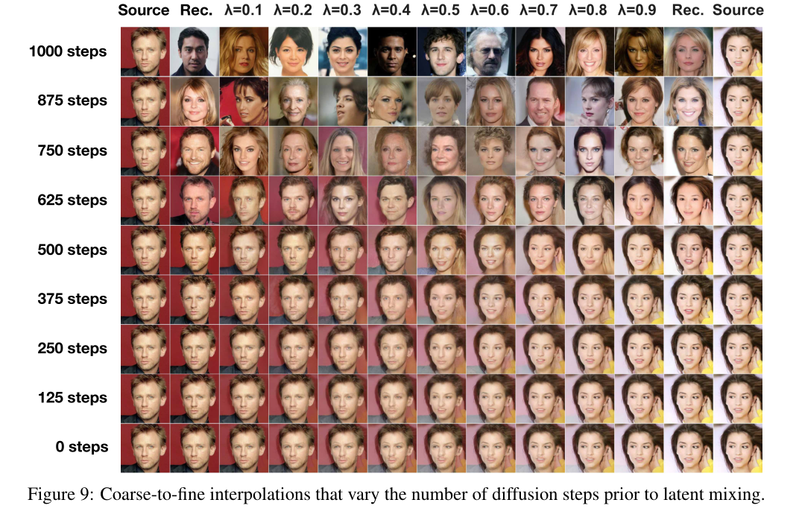
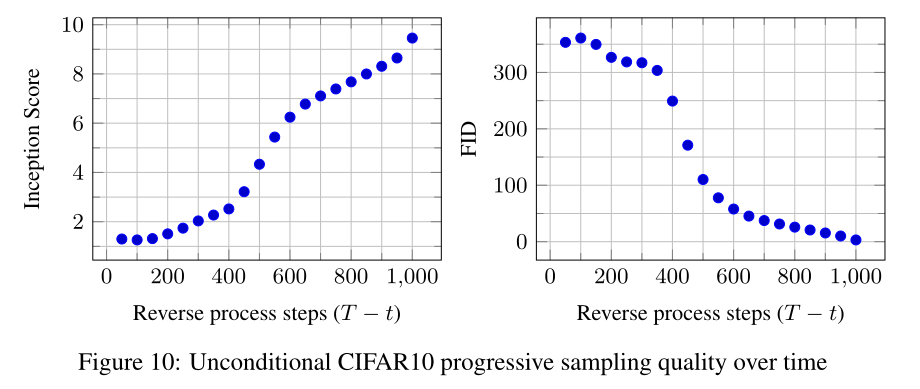
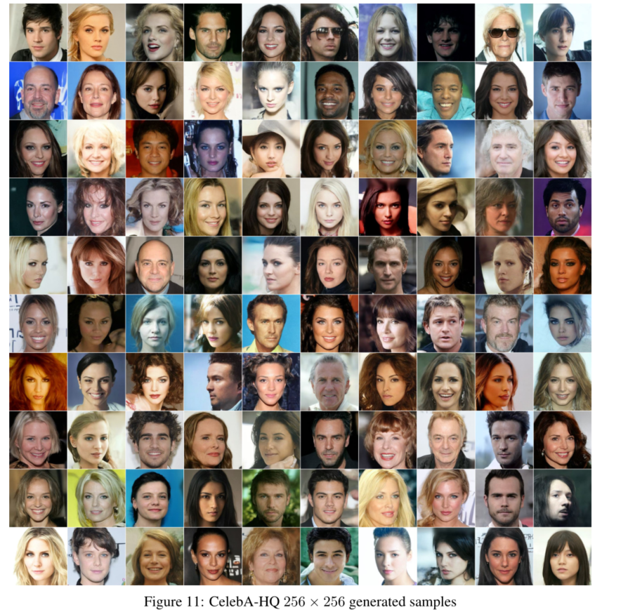
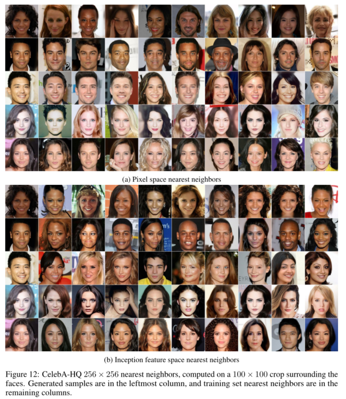
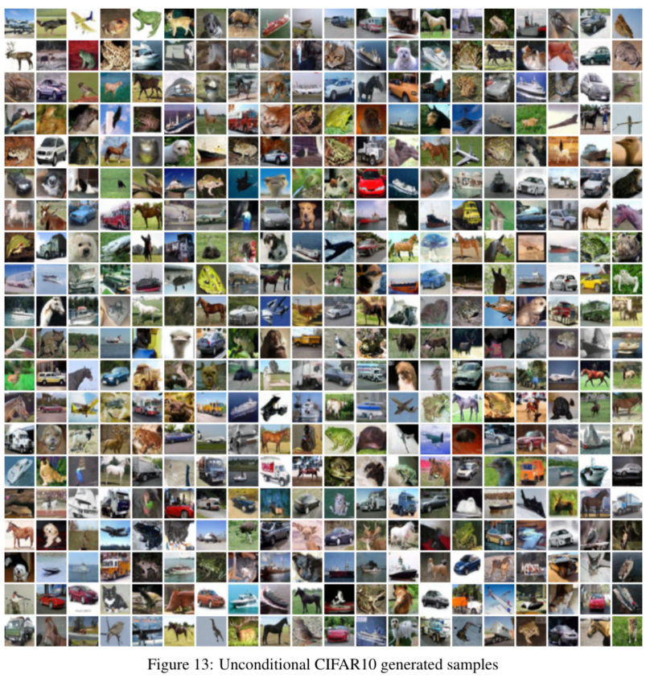
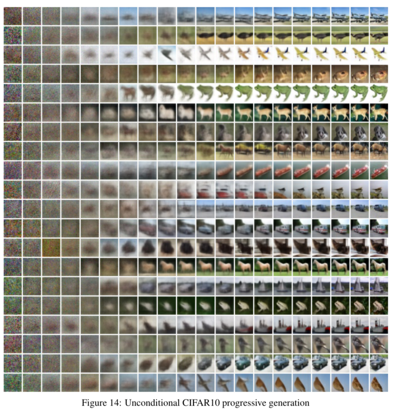
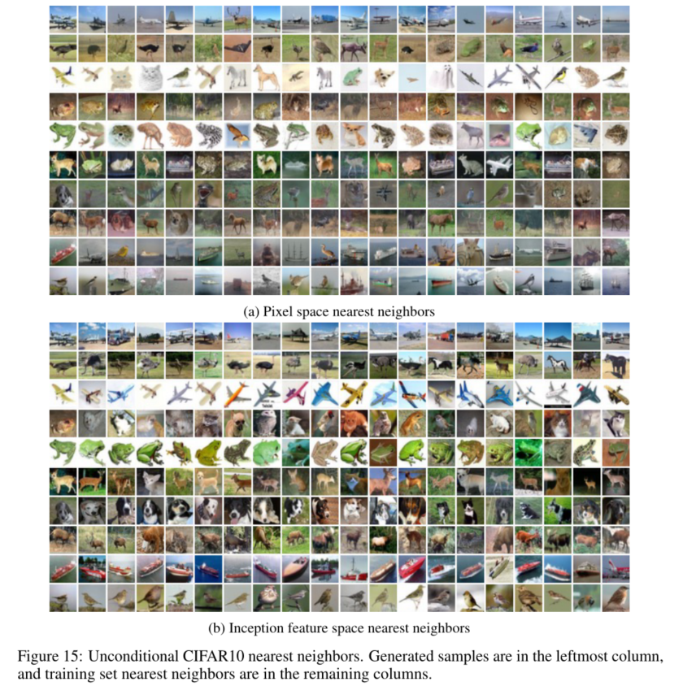
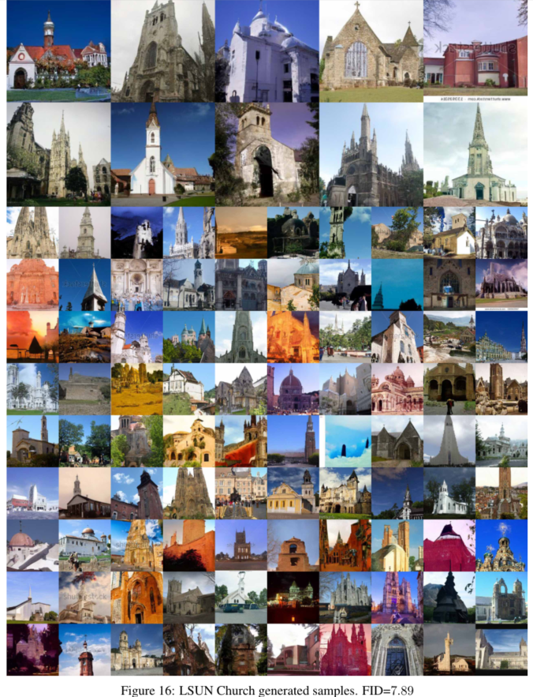
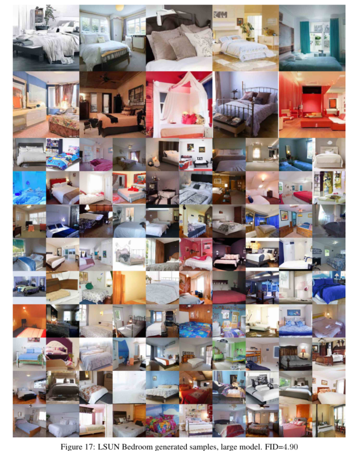
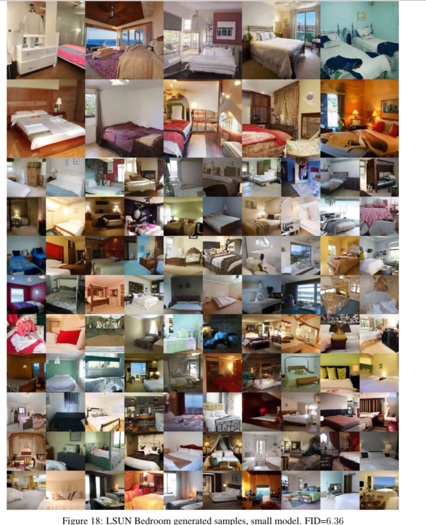
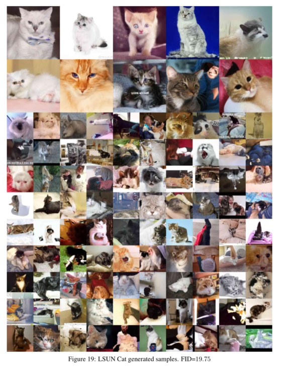
问题
Abstract部分
非平衡热力学启发体现在哪里？与朗之万动力学的联系体现在哪里？
非平衡热力学对扩散概率模型的启发主要体现在模型构建和训练机制上，它为模型设计提供了理论支撑，让模型能更好地模拟数据分布，实现高质量图像合成。
- 正向扩散过程：模拟非平衡态向平衡态演化。正向过程逐渐向数据中添加高斯噪声，直至信号被完全破坏，类似非平衡热力学中系统从有序趋向无序的过程。通过方差调度$\beta_{1}, …, \beta_{T}$控制噪声添加的程度，使得数据分布逐渐变化，这种从低噪声状态向高噪声状态的转变，类比于非平衡系统在热力学过程中的状态变化，系统熵不断增加，最终达到平衡态（高噪声状态）。
- 反向采样过程：反向过程通过学习参数化的马尔可夫链来逆转扩散过程，从高噪声状态逐步恢复到低噪声状态，生成接近原始数据的样本。这类似于在非平衡热力学中，通过外界干预使系统从平衡态向有序状态转变（虽然实际热力学过程中这种自发逆向转变较为困难，但在模型中通过学习实现）。模型训练时，调整参数使反向过程尽可能准确地恢复原始数据，就像在特定条件下使非平衡系统逆向演化，体现了非平衡热力学中对系统状态转变的控制思想。
- 与朗之万动力学的联系：论文发现扩散模型的训练与基于朗之万动力学的去噪得分匹配存在等价关系。朗之万动力学描述了粒子在随机力和摩擦力作用下的运动，在扩散模型中，采样过程类似朗之万动力学，通过对数据密度的学习梯度（由$\epsilon_{\theta}$表示）来引导采样。这种联系反映了非平衡热力学中粒子在复杂环境下的动力学行为，为模型的采样过程提供了理论依据，使模型在生成样本时能更好地捕捉数据的分布特征。
Inception 分数和FID 分数分别是什么？
Inception分数（Inception Score，IS）：用于评估生成图像质量的指标。基于Inception网络，该网络在ImageNet数据集上进行过预训练。计算时，首先将生成的图像输入Inception网络，得到预测的类别概率分布。Inception分数通过衡量这些概率分布的两个特性来评估图像质量：一是类别预测的平均置信度，反映生成图像的清晰度和可识别性，置信度越高，说明图像越清晰，模型对其类别的判断越明确；二是这些概率分布的熵，衡量生成图像的多样性，熵越大，图像多样性越高。最终，Inception分数是这两个指标的综合体现，分数越高，表示生成的图像质量越高，既清晰又多样。
FID分数（Frechet Inception Distance，FID）：也是评估生成图像质量的重要指标。通过计算生成图像集和真实图像集在Inception网络提取的特征空间中的距离来衡量。具体而言，它计算两个高斯分布之间的Frechet距离，这两个高斯分布分别由真实图像和生成图像在Inception网络某一层的特征统计得到，包括特征的均值和协方差。FID分数越低，表明生成图像的特征分布与真实图像的特征分布越接近，即生成图像在视觉内容和结构上与真实图像越相似，生成模型的性能也就越好。
Background部分
$p_{\theta}(x_{0:T})$详解
$p_{\theta}(x_{0:T})$是一个联合概率密度分布，它在扩散模型中描述了包含原始数据$x_0$以及一系列潜在变量$x_1,\cdots,x_T$的联合概率情况。在扩散模型中，$p_{\theta}(x_{0:T})$通常被定义为马尔可夫链形式：$p_{\theta}(x_{0:T}) = p(x_T)\prod_{t = 1}^{T}p_{\theta}(x_{t - 1}|x_t)$ ，其中：
- $p(x_T)$：是先验分布，如$p(x_T) = \mathcal{N}(x_T; 0, I)$，表示$x_T$服从均值为$0$、协方差矩阵为单位矩阵$I$的高斯分布，它给出了反向过程起始状态$x_T$的概率分布情况。
$\prod_{t = 1}^{T}p_{\theta}(x_{t - 1}|x_t)$：是从$x_T$到$x_0$的各步条件概率分布的乘积。$p_{\theta}(x_{t - 1}|x_t)$是在参数$\theta$下，从$x_t$到$x_{t - 1}$的条件概率分布，通常也被设定为高斯分布，如$p_{\theta}(x_{t - 1}|x_t) = \mathcal{N}(x_{t - 1}; \mu_{\theta}(x_t, t), \sum_{\theta}(x_t, t))$，由均值函数$\mu_{\theta}(x_t, t)$和协方差矩阵函数$\sum_{\theta}(x_t, t)$决定。这个乘积体现了从$x_T$逐步经过$T$个步骤转移到$x_0$的联合概率关系。
链式法则：用于计算多个随机变量联合概率的重要工具。对于随机变量序列$x_0,x_1,\cdots,x_T$，其联合概率$p_{\theta}(x_{0:T})$可以根据链式法则展开。链式法则的一般形式为 $p(x_1,x_2,\cdots,x_n)=p(x_n)p(x_{n - 1}|x_n)\cdots p(x_1|x_2,x_3,\cdots,x_n)$。
$q(x_{1:T}|x_0)$详解
这个公式描述的是在给定初始状态 $x_0$ 的条件下，状态序列 $x_1,x_2,\cdots,x_T$ 的联合条件概率，它基于马尔可夫性质和概率的链式法则得出，以下详细解释：
马尔可夫性质：指的是在已知当前状态的情况下，未来的状态只依赖于当前状态，而与过去的状态无关。在该公式所描述的情境中，假设状态序列 $x_0,x_1,\cdots,x_T$ 构成一个马尔可夫链，即对于任意的 $t$，$x_t$ 只依赖于 $x_{t - 1}$，可表示为 $q(x_t|x_{0:t - 1}) = q(x_t|x_{t - 1})$ 。这意味着在从 $x_0$ 到 $x_T$ 的状态转移过程中，每一步的状态转移只与前一步的状态相关，而不需要考虑更前面的所有状态。
概率的链式法则：用于计算多个随机变量的联合概率。对于随机变量 $X_1,X_2,\cdots,X_n$，其联合概率 $P(X_1,X_2,\cdots,X_n)$ 可以按照链式法则展开为 $P(X_1,X_2,\cdots,X_n)=P(X_1)P(X_2|X_1)P(X_3|X_1,X_2)\cdots P(X_n|X_1,X_2,\cdots,X_{n - 1})$ 。
结合上述马尔可夫性质，对于条件概率 $q(x_{1:T}|x_0)$（即在给定 $x_0$ 的条件下，$x_1$ 到 $x_T$ 的联合条件概率），根据链式法则原本为 $q(x_{1:T}|x_0)=q(x_1|x_0)q(x_2|x_0,x_1)q(x_3|x_0,x_1,x_2)\cdots q(x_T|x_0,x_1,\cdots,x_{T - 1})$ ，但由于马尔可夫性质，$q(x_2|x_0,x_1)=q(x_2|x_1)$，$q(x_3|x_0,x_1,x_2)=q(x_3|x_2)$ ，以此类推，最终就得到了 $q(x_{1:T}|x_0)=\prod_{t = 1}^{T}q(x_t|x_{t - 1})$ ，即将联合条件概率表示为从 $t = 1$ 到 $t = T$ 每一步相邻状态间条件概率的乘积。